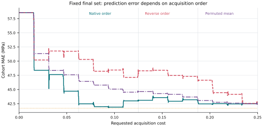
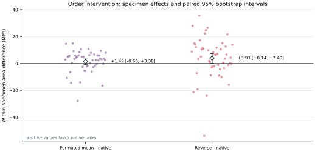
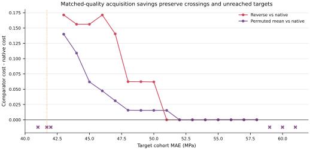
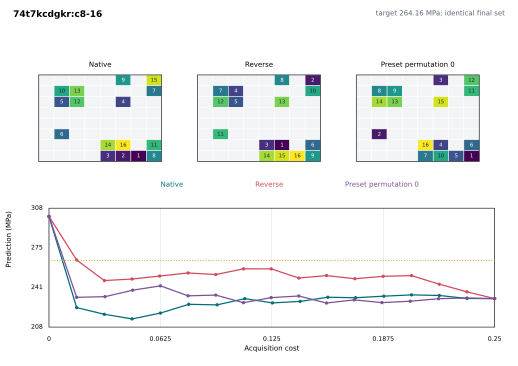
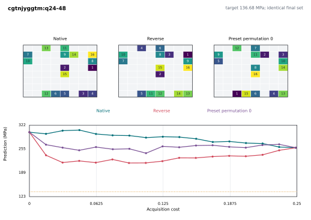
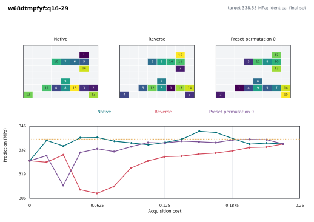
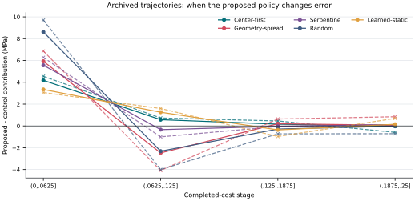

Fixed final set order intervention
The native, reverse, and five preset hash permutations contain exactly the same terminal cells. Positive comparator-minus-native area differences favor native order; scientific significance is reported, not used as a completion gate.
Native area43.60 MPa
Permuted - native+1.49 MPa95% CI -0.66 to 3.38
Reverse - native+3.93 MPa95% CI 0.14 to 7.40
Endpoint difference0.00 MPasame final set



Fixed cases



Summary table
| Order | Area, MPa | Early area, MPa | Endpoint MAE, MPa |
|---|---|---|---|
| Native order | 43.597 | 48.771 | 42.385 |
| Reverse order | 47.526 | 52.099 | 42.385 |
| Permuted order (5-repeat mean) | 45.083 | 50.399 | 42.385 |
Paired contrasts
| Contrast | Metric | Estimate | CI low | CI high |
|---|---|---|---|---|
| PRIMARY_PERMUTED_MEAN_MINUS_NATIVE | area_mpa | 1.486 | -0.658 | 3.384 |
| PRIMARY_PERMUTED_MEAN_MINUS_NATIVE | early_area_mpa | 1.628 | -2.190 | 5.180 |
| PRIMARY_PERMUTED_MEAN_MINUS_NATIVE | final_error_mpa | 0.000 | 0.000 | 0.000 |
| SECONDARY_REVERSE_MINUS_NATIVE | area_mpa | 3.929 | 0.145 | 7.405 |
| SECONDARY_REVERSE_MINUS_NATIVE | early_area_mpa | 3.328 | -1.527 | 7.979 |
| SECONDARY_REVERSE_MINUS_NATIVE | final_error_mpa | 0.000 | 0.000 | 0.000 |
Archived trajectory timing decomposition
Five controls are compared with Proposed / 本文方法 using saved trajectories only. Weighted and raw event identities are preserved; random-policy repeats are averaged within specimen before six-domain-equal aggregation.

Weighted stage contrasts
| Control | Stage | Estimate | CI low | CI high |
|---|---|---|---|---|
| Center-first | 1.000 | 4.176 | -1.056 | 9.054 |
| Center-first | 2.000 | 0.572 | -2.116 | 3.205 |
| Center-first | 3.000 | 0.161 | -0.705 | 1.027 |
| Center-first | 4.000 | -0.031 | -0.244 | 0.194 |
| Geometry-spread | 1.000 | 5.926 | -0.117 | 11.095 |
| Geometry-spread | 2.000 | -2.475 | -6.110 | 1.112 |
| Geometry-spread | 3.000 | 0.199 | -0.619 | 0.942 |
| Geometry-spread | 4.000 | 0.063 | -0.083 | 0.217 |
| Serpentine | 1.000 | 5.562 | -0.805 | 11.071 |
| Serpentine | 2.000 | -0.340 | -2.653 | 2.159 |
| Serpentine | 3.000 | -0.032 | -0.886 | 0.830 |
| Serpentine | 4.000 | 0.125 | -0.046 | 0.305 |
| Random | 1.000 | 8.617 | 4.194 | 12.678 |
| Random | 2.000 | -2.314 | -4.549 | 0.070 |
| Random | 3.000 | -0.286 | -0.954 | 0.347 |
| Random | 4.000 | -0.019 | -0.191 | 0.165 |
| Learned-static | 1.000 | 3.341 | -1.651 | 8.050 |
| Learned-static | 2.000 | 1.254 | -0.919 | 3.350 |
| Learned-static | 3.000 | -0.365 | -1.225 | 0.505 |
| Learned-static | 4.000 | 0.150 | -0.035 | 0.330 |
Data and audit
order summary paired contrasts stage contrasts matched quality resource ledger release manifest